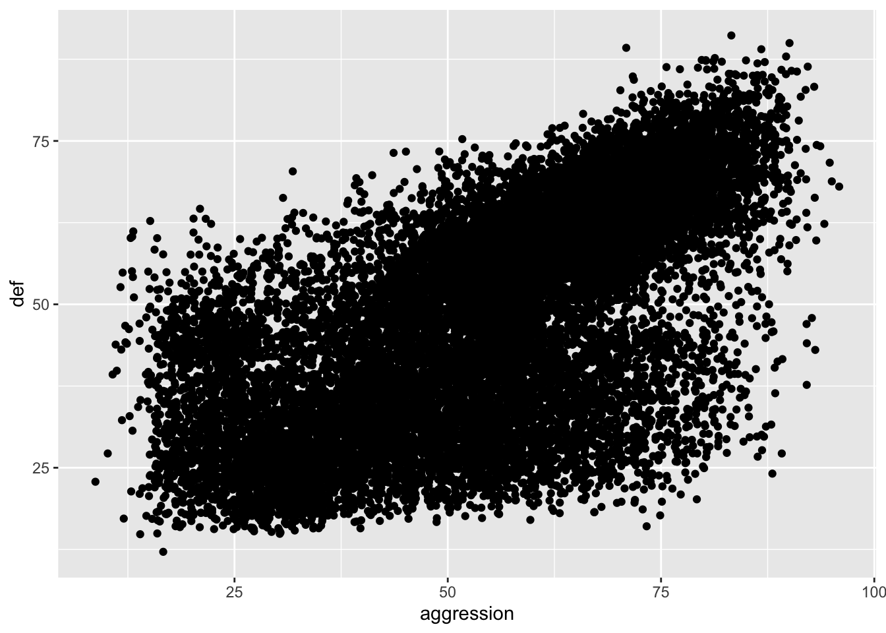

library(tidyverse)
library(janitor)
fifa21_raw_data <- read_csv("~/Desktop/Career/Practice/Github/FIFA 21/fifa21_raw_data.csv")
data <- fifa21_raw_data %>%
select(-c(photoUrl,playerUrl, `Loan Date End`, `Release Clause`)) %>%
clean_names()FIFA 21 Analysis
Introduction
Here, I will load in packages and narrow down what I want to work with for this data set:
Data Synthesis
Checkout the Team & Contract column and separate by how long they have their contract period and their club. Then, find which players have played at a club for more than 10 years:
#clean
teamtime <- data %>%
drop_na() %>%
mutate('contract' = str_sub(team_contract, start = -13)) %>%
mutate('team' = str_sub(team_contract, start = 1, end = -15)) %>%
select(-c(team_contract))
#players 10+ years
a <- str_sub(teamtime$contract, start = -4, end = -3) %>%
as.numeric()
b <- str_sub(teamtime$contract, start = 3, end = 4) %>%
as.numeric()
decades <- teamtime %>%
mutate('Years_at_club'= a-b) %>%
filter(c(a-b) >= 10) %>%
select(c(name, Years_at_club))
tibble(decades)# A tibble: 462 × 2
name Years_at_club
<chr> <dbl>
1 L. Messi 17
2 Casemiro 10
3 M. Neuer 12
4 K. Benzema 13
5 Sergio Ramos 16
6 S. Agüero 10
7 H. Kane 14
8 Sergio Busquets 15
9 H. Lloris 10
10 G. Chiellini 16
# … with 452 more rowsModeling Data
Which positions get paid the most? Create a plot that displays this data:
costs <- data %>%
drop_na() %>%
mutate('wage_thousands' = str_extract(wage, "[0-9]+\\.*[0-9]+")) %>%
select(74,bp)
worth <- costs %>%
drop_na() %>%
group_by(bp) %>%
summarize('n' = mean(as.numeric(wage_thousands))) %>%
tibble(value = (n * 1.15) * 100,
overall = mean(bp))
worth %>% ggplot(aes(x = bp, y = value)) +
geom_col(fill = 'chartreuse3') +
labs(title = 'Position vs wage',
subtitle ='Looking at the average wage (USD) per position',
x = 'Position',
y = 'Average Wage')Check Ratings
Let’s observe at who is the best technically. Find out who is the best overall, has the best individual characteristic on a FIFA Card (pace,shooting, passing, dribbling, defending, physical) and who is the best overall right / left foot.
overall# A tibble: 1 × 3
name bp ova
<chr> <chr> <dbl>
1 L. Messi RW 93pace# A tibble: 3 × 3
name bp pac
<chr> <chr> <dbl>
1 K. Mbappé ST 96
2 A. Davies LB 96
3 Adama Traoré RM 96shooting# A tibble: 1 × 3
name bp sho
<chr> <chr> <dbl>
1 Cristiano Ronaldo ST 93passing# A tibble: 1 × 3
name bp pas
<chr> <chr> <dbl>
1 K. De Bruyne CAM 93dribbling# A tibble: 1 × 3
name bp dri
<chr> <chr> <dbl>
1 L. Messi RW 95defend# A tibble: 1 × 3
name bp def
<chr> <chr> <dbl>
1 V. van Dijk CB 91physical# A tibble: 2 × 3
name bp phy
<chr> <chr> <dbl>
1 Casemiro CDM 91
2 A. Méndez CB 91rightf# A tibble: 1 × 3
name foot ova
<chr> <chr> <dbl>
1 Cristiano Ronaldo Right 92leftf# A tibble: 1 × 3
name foot ova
<chr> <chr> <dbl>
1 L. Messi Left 93Statistical Analysis
Is there a correlation between:
a) age and overall rating?
b) aggression and defending?
c) weight and pace?
d) height and heading?
#age and overall rating
data %>%
ggplot(mapping = aes(x = age, y = ova, color = foot)) +
geom_jitter() 
Conclusions:
There seems a moderately strong, positive correlation between age and the overall rating, in that the older a player is, the higher the rating will be, on average. From the graph, the points are generally following this trend confirmed by the correlation being .46. I added in the dominant foot for the aesthetic and to see if it played a role in the correlation between the two, and it did not have any noticeable impact.
As for the summary of the model predicting overall rating by using age, this shows that the R squared is low (.21), meaning the variability of the data is lacking. In addition, there is a smaller p value than alpha (<2e-16 < .05), so there is at least some statistical significant correlation between the two. The coefficient means that for every year that a player ages, their rating will increase by .69 on average.
Overall, age is effective in predicting the overall rating of player.
#aggression and defending
data %>%
ggplot(mapping = aes(x = aggression, y = def)) +
geom_jitter()
Conclusions:
The data above demonstrates that the more aggressive a player is, the better defender they will be on average, based on the strong and positive correlation of .66. In reality this seems to be related because as a defender, it is imperative that you are aggressive when confronted with an attacker or a ball that you can win.
The model tells us that there is a statistical significant correlation when aggression rating predicts the defensive rating since the p value is significant. The R-squared is moderate, and shows a decent variability of data at .44. The coefficient is stating that for every increase in aggression rating, the defensive rating will increase by .66, for any player on average.
To conclude, there is some influence on the defensive rating from the aggression rating, in this data set.
#weight and pace rating
paclbs <- data %>%
mutate('Weight' = str_extract(weight, "[0-9]+")) %>%
mutate('lbs' = as.numeric(Weight))Conclusions:
This comparison between the weight of a player and how fast the player is, does not seem to have much magnitude in terms of correlation (-.32). The negative symbol is interesting, because it means that the less weight you are, the faster you will be on average, which makes practical sense as well as the similarity of the graph. I wonder why this would not be a higher correlation.
The model, where pounds predicts pace, has a variety of useful statistical information that can be used to create a conclusion. For instance, the p value being lesser than the alpha value (<2.2e-16 is less than .05), tells us that there is some sort of correlation between pace rating and weight (in pounds) of a player, on average. As for the R squared value, it shows how little variability there is for the data (.106), which does not provide much help when predicting. The coefficient signifies for every pound that is gained, the pace rating of a player will decrease by a factor of .22.
Generally, there is some correlation between pace and weight.
#height and heading
inches <- data %>%
drop_na() %>%
mutate('n' = as.numeric(str_sub(height, start=1, end = 1))) %>%
mutate('n1' = as.numeric(str_sub(height, start = 3, end = -2))) %>%
mutate('inc' = (n * 12) + n1) %>%
mutate('pos' = str_extract(positions, "[A-Za-z]+")) %>%
select(heading_accuracy, n, n1, inc, pos)
inches2 <- inches %>%
filter(pos != 'GK')
inches %>%
ggplot(mapping = aes(x = inc, y = heading_accuracy, color = pos)) +
geom_jitter()inches2 %>%
ggplot(mapping = aes(x = inc, y = heading_accuracy, color = pos)) +
geom_jitter()Conclusions:
This data is strange, because originally it had an incredibly weak correlation (.01) and the graph explains it through two groupings of points, but why there is a grouping of points almost separate from the bigger trend? After some tweaking, I found that goalies held down the average. I changed the criteria to meet only field players and found there was a moderate correlation between height and heading accuracy at .51.
This model involves the height (in inches) of a player predicts the heading ability of a player. Including the goalies, the model was terrible. For example, the R squared is tragically below several decimal places below 1, which signifies a very weak variability in the data. The p value (.12) is greater than alpha (.05), that means that there is no proof that there is some correlation between the two, statistically. The coefficient explains that for every inch that a player grows, there will be an increase in heading accuracy by a rating of .07, on average.
After changes to field players, I found the p value to be under alpha (<2.2e-16), the r squared to be around .2, and the coefficient stating that for every inch a field player grows, there will be an increase of heading accuracy by more than 2 rating units. There is an obvious and practically logical conclusion that there is a degree of correlation between the height of a player and the heading accuracy.
Predicting
FIFA calculates the overall rating of each player through a variety of variables. Since there is a lot that goes into each position (ex. defensive creativity doesn’t impact a striker as much as it does a defender), find a model that predicts the overall rating of only defenders; choose the variables you think fit a defender best and simplify the model.